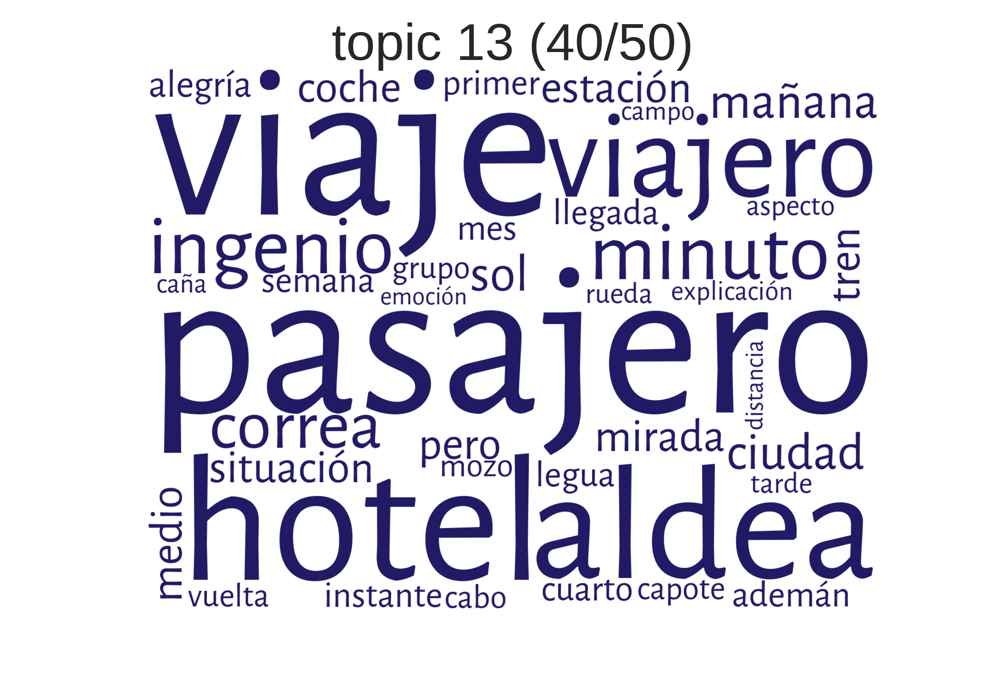
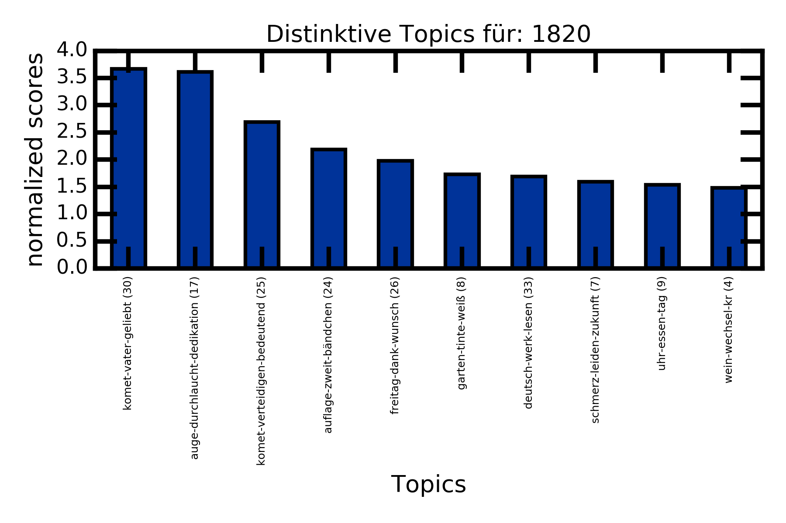

Topic Modeling
Ulrike Henny-Krahmer
(CLiGS, Universität Würzburg, ulrike.henny@uni-wuerzburg.de)
DHd 2019
Workshop "Distant Letters: Methoden und Praktiken zur quantitativen Analyse digitaler Briefeditionen"
Universität Mainz, 26. März 2019
Folien unter: https://hennyu.github.io/dhd_19/


Übersicht
- Einführung
- Workflow: Vorbereitung des Korpus, Modellierung, Nachbereitung, Visualisierung und Interpretation der Ergebnisse
- Praxis: JeanPaul-Briefe
1. Topic Modeling: Eine Einführung
Was ist Topic Modeling?
"Topic modeling is complicated and potentially messy but useful and even fun. The best way to understand how it works is to try it."(Megan R. Brett, "Topic Modeling: A Basic Introduction")
Was ist Topic Modeling?
- Topic Modeling ist eine quantitative Methode für Textanalyse
- In einem Korpus von Dokumenten werden statistisch Wortverteilungen ermittelt
- Topic Modeling ist besonders nützlich für große Textsammlungen
Das Ziel von Topic Modeling ist es...
..."versteckte" semantische Strukturen zu entdecken.
Wie funktioniert Topic Modeling?
Grundidee aus der Distributionellen Semantik:
"a word is characterized by the company it keeps"(John Firth, 1957)
Wie funktioniert Topic Modeling?
- Mit Topic Modeling werden wiederkehrende Themen, Motive, Diskurse automatisch identifiziert
- wichtig: das geschicht ohne explizites semantisches Wissen!
Woher kommt Topic Modeling?
- Topic Modeling ist vor allem auf empirischer Grundlage entwickelt worden
- ursprünglich für Information Retrieval entwickelt (Suche nach Dokumenten anhand von Themen)
- aktuelle Methode (meist verwendet): LDA (Latent Dirichlet Allocation), 2003
Wie funktioniert Topic Modeling?
Grundidee:
- Ermittlung von Wörtern, die immer wieder zusammen vorkommen (= in ähnlichen Kontexten) ⇒ Topics
- Berechnung, wie wichtig jedes Topic in jedem Dokument ist
Wie funktioniert Topic Modeling?
etwas technischer:
- ein Topic ist eine Wahrscheinlichkeitsverteilung über Wörter
- ein Dokument ist eine Wahrscheinlichkeitsverteilung über Topics
Wörter, Topics, Dokumente

Generativ, iterativ
generativ
- Im Zentrum der Technik steht ein generatives Modell
- Wie hätten die Dokumente entstehen können?
iterativ
für jedes __Dokument__ in der Sammlung:
wähle eine Topic-Verteilung
für jedes __Wort__ im Dokument:
wähle ein Topic, zu dem das Wort gehört
wähle ein Wort aus dem Topic
wiederhole den ganzen Prozess!
Generativ, iterativ

Generativ, iterativ

Und so funktioniert es wirklich:

Begriffe und Konzepte
Wort, Topic, Dokument haben im Topic Modeling eine besondere Bedeutung
Begriffe und Konzepte
words
- Tokens: etwa Einheiten der Wortebene
- Sätze werden "tokenisiert"
- Tokens sind nicht immer Wörter
- "Topic Modeling" kann auch ein Token sein
Begriffe und Konzepte
Dokumente
- nicht: Sequenzen von Wörtern mit Satzzeichen
- sondern: eine Sammlung von Wortzählungen
- z.B. ["sein" : 2, "oder" : 1, "nicht" : 1]
Begriffe und Konzepte
corpus
- eine Sammlung von Dokumenten
Begriffe und Konzepte
Topics
- im zugrundeliegenden Modell sind sie nicht unbedingt das, worum es in einem Text geht
- technisch: eine Wahrscheinlichkeitsverteilung über ein Wort-Vokabular
- (Vokabular: die Menge aller verschiedenen Wörter im Korpus)
Wie kann man Topics verstehen?
- Themen von Texten
- Elemente des Diskurses
- Literarische Motive
- ... ?
Wie kann man Topics verstehen?
Beispiele aus einem Korpus hispanoamerikanischer Romane"Schule"

Wie kann man Topics verstehen?
Beispiele aus einem Korpus hispanoamerikanischer Romane"Reise"
Wie kann man Topics verstehen?
Beispiele aus einem Korpus hispanoamerikanischer Romane"Französische Intervention in Mexiko (1861-1867)"

Wie kann man Topics verstehen?
Beispiele aus einem Korpus hispanoamerikanischer Romane"Landschaftsbeschreibung"

Anwendungsszenarien
- Information Retrieval: Suche nicht nach einzelnen Begriffen, sondern nach Themen / semantischen Feldern
- Recommender Systems: Vorschläge von semantisch ähnlichen Forschungsartikeln
- Exploration von Textsammlungen
- Fragen aus der Literatur- und Kulturgeschichte
Forschungsbeiträge
- Cameron Blevins: "Topic Modeling Martha Ballard's Diary" (2010): Tagebuch, über die Zeit
- Ted Underwood und Andrew Goldstone (2012): "What can topic models of PMLA teach us...": Wissenschaftsgeschichte
- Lisa Rhody, "Topic Modeling and Figurative Language" (2012): Dichtung, Ekphrasis
- Matthew Jockers, Macroanalysis (2013): Roman, Nationalität, Gender
- Ben Schmidt: "Typical TV episodes" (2014): TV-Serien, über die Sendezeit
- Christof Schöch, "Topic Modeling Genre" (2017): Drama, Untergattungen
2. Workflow
- Vorbereitung des Korpus
- Modellierung
- Nachbereitung
- Visualisierung/Interpretation
Links:
- Diese Folien: https://hennyu.github.io/dhd_19/
- Daten: https://idevm.uni-koeln.de/owncloud/index.php/s/a7FyqBEDy0a0tAn
bzw. https://tinyurl.com/y24ysfjc
(Passwort: jeanpaul)
(Passwort: jeanpaul)
Übersicht über den Workflow

(Mallet und Python; siehe http://github.com/cligs/tmw.)
Übersicht: Tools
| Name | Entwickler | Sprache | Link | ||
|---|---|---|---|---|---|
| MALLET | machine learning for language toolkit |  |
Andrew McCallum et al. | Java | http://mallet.cs.umass.edu/topics.php |
| Gensim | topic modeling for humans | |
Radim Řehůřek | Python | https://radimrehurek.com/gensim |
| tmw | topic modeling workflow |  |
Christof Schöch | Python | https://github.com/cligs/tmw |
| DARIAH Topics Explorer | topic modeling workflow | |
DARIAH/Würzburg | Python | https://github.com/DARIAH-DE/TopicsExplorer https://dariah-de.github.io/TopicsExplorer/ |
| dfr-browser | a simple topic-model browser |  |
Andrew Goldstone | JavaScript | http://agoldst.github.io/dfr-browser/ |
Übersicht über den Workflow
{kind=link}
(Mallet und Python; siehe http://github.com/cligs/tmw.)
1. Vorbereitung des Korpus (preprocessing)
- nötig: viele Texte (Textauswahl, Volltexte)
- optional: Metadaten
- optional: NLP (Normalisierung, Lemmatisierung, PoS-Tagging)
- optional: Stopwords
- optional: Segmentierung
Vorbereitung Jean Paul-Korpus
- 2.636 Briefe (Volltextdateien > 500 Bytes)
- Extraktion von Metadaten aus XML/TEI
- Lemmatisierung/PoS-Tagging der Texte
- Auswahl: Nomen, Verben, Adjektive
Beispiel Metadaten

Jean Paul-Metadaten
- wo liegen sie? Workshop-DHD/Dienstag/topic_modeling/data/metadata.csv
Übersicht über den Workflow
{kind=link}
(Mallet und Python; siehe http://github.com/cligs/tmw.)
2. Modellierung
- Erstellen des Topic-Modells selbst
- Ausgangspunkt: vorbereitetes Korpus
- Ergebnis: Wörter in Topics, Topics in Dokumenten
- z.B. mit den Tools MALLET oder Gensim
MALLET
- MALLET (Machine Learning for Language Toolkit, https://github.com/mimno/Mallet)
- Tutorial: https://programminghistorian.org/en/lessons/topic-modeling-and-mallet
- Parameter:
- Anzahl der Topics
- Anzahl der Iterationen
- Modus für Optimierung
MALLET aufrufen
Zwei Schritte:
- import
- wandelt alle Textdateien in ein MALLET-Korpusformat um
- berücksichtigt die Stopwords
- schreibt eine binäre Datei
- train-topics
- führt das eigentliche Topic-Modeling durch
- es werden Output-Dateien geschrieben
MALLET "train-topics": das Topic-Modell trainieren
- sage dem Computer: verwende MALLET
- sage MALLET: modelliere (train-topics) und
- ... wo die Korpusdatei ist (--input)
- ... wie viele Topics es geben soll (--num-topics)
- ... wie häufig optimiert werden soll (--optimize-interval)
- ... wie viele Wörter in den Topics gezeigt werden sollen (--num-topic-words)
- ... den Pfad zum Output "topics-with-words" (--output-topic-keys)
- ... den Pfad zum Output "topics-in-texts" (--output-doc-topics)
- ... den Pfad zum Output "word-weights" (--topic-word-weights-file)
MALLET "train-topics" (Linux, Mac)
/home/ulrike/Programme/mallet-2.0.8RC3/bin/mallet train-topics
--input TM/Korpora/es/model.mallet
--num-topics 40
--optimize-interval 100
--num-iterations 5000
--num-top-words 50
--output-topic-keys mallet/model/topics-with-words.txt
--output-doc-topics mallet/model/topics-in-texts.txt
--topic-word-weights-file mallet/model/word-weights.txt
MALLET: Parameter für Jean Paul-Korpus
- Anzahl Topics: 40
- Anzahl Iterationen: 5000
- Optimierung: alle 100 Iterationen
MALLET: Die Ergebnisse anschauen
- Die Output-Dateien, die generiert wurden (= das fertige Topic-Modell), öffnen und ansehen
- womit? Tabellen-Programm wie Calc/Excel oder einfaches Textprogramm)
- wo liegen diese Daten? Workshop-DHD/Dienstag/topic_modeling/data/mallet/40tp-5000it-100in
Übersicht über den Workflow
{kind=link}
(Mallet und Python; siehe http://github.com/cligs/tmw.)
3. Nachbereitung (postprocessing)
nach dem Topic-Modeling:
- Zusammenführen der Ergebnisse mit den Metadaten
- Berechnung von Durchschnittswerten für Metadatenkategorien
Topic-"Aggregate" für Jean Paul-Daten
- z.B. Topic-Scores nach Jahr, Ort, Empfänger, ...
- wo liegen sie? Workshop-DHD/Dienstag/topic_modeling/data/Beispiellösung/aggregates
Übersicht über den Workflow
{kind=link}
(Mallet und Python; siehe http://github.com/cligs/tmw.)
4. Visualisierung
... Interpretation
... Evaluation
Visualisierungsoptionen in tmw
Wortwolken
Treemaps (Topics)
Treemaps (Dokumente, Jean Paul an Georg Reimer, 17.7.1818)
Säulendiagramme (Top Topics für die Dekade 1820)
Säulendiagramme (Top Items für das Topic "auflage-zweit-bändchen")
Heatmaps (distinktive Topics nach Dekaden)
Interpretation und Evaluation
Wie interpretierbar sind die Ergebnisse?
- Ein Topic Model kann Topics hervorbringen, die nach Themen aussehen.
- Es können aber auch andere Arten semantischer Relationen sichtbar werden: Motive, Redeweisen, …
- Oder es ist kein semantischer Zusammenhang erkennbar.
Interpretation und Evaluation
Wie können die Ergebnisse evaluiert werden?
- Zufälligkeit der Ergebnisse
- Evaluation von Topic Models - was wird erwartet?
- z.B. semantische Kohärenz von Topics
- dass Topic Models die Dokumente „gut“ beschreiben
- (dass das Modell sich gut für andere Aufgaben einsetzen lässt)
Wie kann das überhaupt gemessen werden? (z.B. http://mallet.cs.umass.edu/diagnostics.php)
3. Praxis
Übersicht über den Workflow
{kind=link}
(Mallet und Python; siehe http://github.com/cligs/tmw.)
Mögliche Fragestellungen
- Variieren die Topics je nach Empfänger?
- weibliche vs. männliche Empfänger
- Jean Pauls Freunde: Emanuel Osmund vs. Christian Otto
- Wie entwickeln sich die Topics über die Zeit?
- wichtige Topics in bestimmten Jahren/Jahrzehnten
- Zusammenhänge zu Biographischem/Werkgeschichtlichem
Links:
- Daten: https://idevm.uni-koeln.de/owncloud/index.php/s/a7FyqBEDy0a0tAn
bzw. https://tinyurl.com/y24ysfjc
(Passwort: jeanpaul)
- Beispiellösungen: Workshop-DHD/Dienstag/topic_modeling/data/Beispiellösung
(Passwort: jeanpaul)
Was wir brauchen
- Python und Python-Module sind installiert (mind. Python 3.5, Module: matplotlib, jupyter, numpy, pandas, pillow, pygal, scipy, seaborn, wordcloud)
- ein fertiges Topic-Modell + Metadaten
- Python-Skripte:
- Run_Postprocess.ipynb
- Run_Visualize.ipynb
- eine Kommandozeile
Python-Skripte ("Notebooks") starten
- Kommandozeile öffnen
- in den Topic-Modeling-Ordner wechseln (cd topic_modeling)
- ipython notebook eingeben, und Enter
- bzw. jupyter notebook und Enter (siehe https://jupyter.org/install)
Fazit
Fazit
- Eine Topic Modeling-Analyse ist vor allem distant reading.
- Topic Modeling kann:
- der Erschließung großer Textsammlungen dienen
- einen neuen Blick auf Texte ermöglichen
- aufdecken, wie Themen, Motive, Diskurse in Sammlungen von (literarischen) Texten entfaltet werden
Vielen Dank!
Literaturhiweise
Theorie und Methode
- Blei, D. M. (2012). "Probabilistic topic models". In: Communications of the ACM, 55(4): 77–84. http://www.cs.princeton.edu/~blei/papers/Blei2012.pdf
- Graham, S., Weingart, S., Milligan, I., "Getting Started with Topic Modeling and MALLET," The Programming Historian 1 (2012), https://programminghistorian.org/en/lessons/topic-modeling-and-mallet.
- Steyvers, M. and Griffiths, T. (2006). "Probabilistic Topic Models". In: Landauer, T. et al. (eds), Latent Semantic Analysis: A Road to Meaning. Laurence Erlbaum.
- Weingart, S. (2012). "Topic Modeling for Humanists: A Guided Tour". In: The Scottbot Irregular. http://www.scottbot.net/HIAL/?p=19113
Literaturhinweise
Beispiele von Topic Modeling-Analysen
- Blevins, C. (2010). "Topic Modeling Martha Ballard’s Diary". In: Historying. http://historying.org/2010/04/01/topic-modeling-martha-ballards-diary/
- Jockers, M. L. (2013). Macroanalysis - Digital Methods and Literary History. Champaign, IL: University of Illinois Press.
- Rhody, L. M. (2012). "Topic Modeling and Figurative Language". In: Journal of Digital Humanities, 2(1) http://journalofdigitalhumanities.org/2-1/topic-modeling-and-figurative-language-by-lisa-m-rhody/
- Schöch, C. (2016). "Topic Modeling Genre: An Exploration of French Classical and Enlightenment Drama". In: Digital Humanities Quarterly. http://digitalhumanities.org/dhq/
- Underwood, T. and Goldstone, A. (2012)." "What can topic models of PMLA teach us about the history of literary scholarship?" In: The Stone and the Shell. http://tedunderwood.com/2012/12/14/what-can-topic-models-of-pmla-teach-us-about-the-history-of-literary-scholarship/
Literaturhinweise
Tools
- dfr-browser: http://agoldst.github.io/dfr-browser/
- Gensim: https://radimrehurek.com/gensim
- MALLET: http://mallet.cs.umass.edu/topics.php
- LDAvis Demo: http://www.kennyshirley.com/LDAvis/
- Serendip: http://vep.cs.wisc.edu/serendip/
- tmw: https://github.com/cligs/tmw
- DARIAH Topics Explorer: https://github.com/DARIAH-DE/TopicsExplorer
Vielen Dank!
Folien unter: https://hennyu.github.io/dhd_19/
tmw: https://github.com/cligs/tmw
CLiGS: http://cligs.hypotheses.de/
Kontakt: ulrike.henny@uni-wuerzburg.de